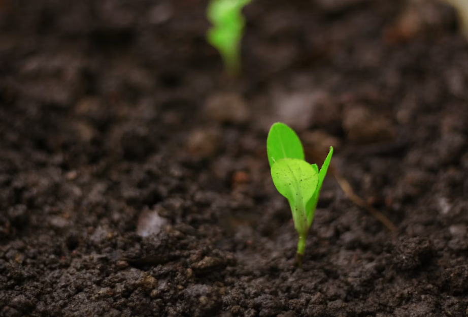

夏の植え替えイベントを開催しました
部員全員で植物の植え替えを行いました。
植物と暮らしをもっと身近に。
一緒に育てる楽しさを見つけませんか？
観葉植物研究会では、植物の育成を通して、 室内環境や植物の成長について学んでいます。
水やりや植え替えなどの基本的な育成方法だけでなく、 植物と暮らしの関わりについても研究しています。
初心者でも安心して活動できる環境を整え、 植物を育てる楽しさを仲間と共有することを目的としています。

部員全員で植物の植え替えを行いました。
モンステラ・パキラなど新しい観葉植物を育成しています。
植物が好きな方、初心者の方も大歓迎です。